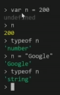
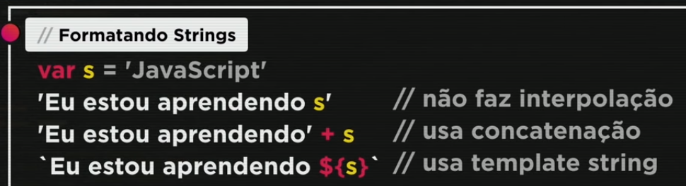

Aula 05
Tipos de Dados e Variáveis
Comentários no JavaScript
Para inserir comentários em JavaScript pode se utilizar dois formatos:
- // Comentário
- Uma linha
- /* Comentário */
- Mais de uma linha
Variáveis
Variáveis são espaços que ficam na memória do computador e são reservados para armazenarem dados. Para criar uma variável, utilizamos as palavras reeservadas var ou let, seguidas do nome da variável, o sinal de atribuição (=) e o valor da mesma.
Temos variáveis de diferentes tamanhos e tipos:
Tipos primitivos de dados:
- number
- Tanto integer quanto float
- Infinity
- NaN
- string
- Pode-se usar três tipos de aspas: "", '' e ``
- boolean
- undefined
- object
- Array
- null
- function
Para saber o tipo de dado de determinada variável, basta utilizar o comando typeof 'nome da variável'.
Quando criamos uma variável, não definimos o seu tipo. Por isso, quando atribuímos tipos diferentes para a mesma variável, ela se altera.
O nome de cada variável recebe o nome de identificador
- Podem começar com letra, $ ou _
- Não podem começar com números
- É possivel utilizar letras e números
- É possível usar acentos e símbolos
- Não podem conter espaços
- Não podem ser palavras reservadas
- Maiúsculas e minúsculas são diferentes
Aula 06
Tratamento de Dados
Guardando e tratando dados
Guardando Dados
Exercício 002Tratando dados
Para converter strings em numbers, podemos utilizar os comandos:
- Number.parseInt(n)
- Number.parseFloat(n)
- Em versão atual: Number(n)
- String(n)
- n.toString()
Formatando Strings
Para formatar as strings de forma facilitada e não precisar utilizar a concatenação, utiliza-se o template de string.
Pode-se também utilizar os seguntes comandos:
- s.toUpperCase()
- s.toLowerCase()
- s.length
Formatando Números
Para formatar números, podemos utilizar os seguintes comandos:
- n.toFixed(número de casas decimais)
- n.replace('.',',')
- n.toLocaleString('pt-BR', {style:'currency', currency:'BRL'})
- n.toLocaleString('pt-BR', {style:'currency', currency:'USD'})
- n.toLocaleString('pt-BR', {style:'currency', currency:'EUR'})